Pirate faction
The Longliners
The world of Runners, as planned. The game is in development and details will change.

A large pirate faction. They roam the Empty Quarter, the open central Pacific, outside every nation's water, and hold no rigs.
HullUpperworksAccent
Logo and colours: draft art.
A family more than a gang. Old fishing crews from all round the Pacific, who stopped going home because there was no home. They don't kill if they don't have to, and they never forget.
- How they live
- They fish the open ocean, and Midway pays them to guard its approaches.
- What they sell
- Salt fish and tuna; Midway's protection money; seized cargo off the Pacific route (ARI to Asia); fresh water and fish sold to desperate ships far from any port.
- Their base
- The Raft, a moving base with no fixed position: old fishing hulls chained together, drifting with the current in the middle of the Empty Quarter, never in one place.
- Who wants them gone
- ARI, Sanya (China) and the Fishing Federation. The Longliners own the road to Asia.
- How to know their ships
- Deep ocean-blue hulls with white upperworks, orange net floats hung along the rails, and the Hook sprayed white on bow and wheelhouse.
Wanted
Ten names, smallest first. The last one runs the whole faction; take them down and the faction falls apart.
- 1Manu "Castaway" TaufaThe bait · Bait, Fishing boat
- 2Rosa "Spotter" CalderónWatches the route · Snag, Scout skiff
- 3Benji "Fair Price" AlvarezCollects Midway's ring fee · Gaff, Dart
- 4Teina "Netter" MoanaFouls the shipping lanes · Bycatch, Trawler
- 5Chen "Racer" Wei-lunThe Raft's fastest chaser · Flying Fish, Skipjack
- 6Isabel "the Purse" NavarroRings ships like tuna · Purse Line, Seiner
- 7Rafael "Gatekeeper" DuarteRuns Midway's protection ring · Protection, Blockade Runner
- 8Lani "Galley" KealohaKeeps the Raft fed · Pot Line, Crab boat
- 9Marco Salazar, "the Ring Boss"Second in command · Swordfish, Frigate
- 10Augusto Ruiz, "Abuelo"Head of the Longliners · Longline, Factory trawler